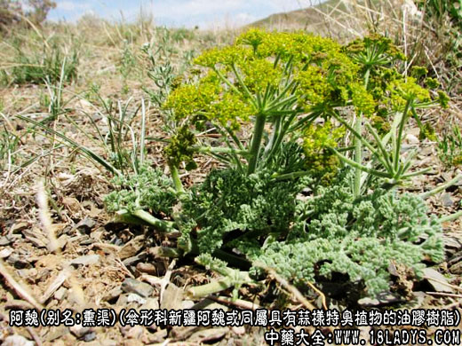
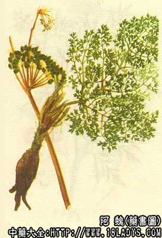

原文连接:https://www.daquan.com/post/2403.html



来源：为伞形科植物新疆阿魏及其同属他种具有蒜样特臭植物的油胶树脂。
别名：熏渠、哈昔泥
产地：主产于新疆阿勒泰、喀什、伊犁、阜康、抚里等地。
历史始载于《唐本草》苏恭谓：“阿魏生西番及昆仑苗叶根茎酷似白芷捣根汁，日煎作饼者为上，截根穿暴干者为次，体性极臭而能止臭”。李时珍谓“夷人自称曰阿，此物极臭，阿之所畏也”。
采收加工：割取法于5～6月植物抽茎后至初花期，由茎上部往下割取，每次待树脂流尽后再割下一刀，一般割3～5次，将收集物放入容器中，置通风干燥处以除去水份。
榨取法：于春季挖出根部，洗去泥沙，切碎，压取汁液，置容器中，放通风处干燥以除去水份。
商品按性状分为五彩阿魏、含沙阿魏、块状阿魏等规格。
性状鉴别：呈不规则块状、泪滴状和脂膏状物，偶有半流体状颜色深浅不一，灰白色、蜡黄色或浅棕黄色，块状物硬似白蜡，质轻，断面稍现孔隙，新鲜切面色较浅，放置颜色渐深。脂膏状者粘稠，灰白色，久贮色泽渐深，本品纯净而无杂质，加水研磨则成白色乳状液，具强烈持久的蒜样臭气，味微苦、辛辣如蒜，嚼之粘牙，对舌有较强的刺激性和烧灼感。
以块状、蒜气强烈、断面乳白或稍带微红色、无杂质者为佳。
成分：含挥发油、树脂及树胶等品质优良的阿魏树脂的含量可达62%，挥发油3～19.6%、树胶25%、游离阿魏酸1.28%及微量的香英兰醛，挥发油为无色或淡黄色澄明液，具强烈蒜臭，主成分为萜烯及多种二硫化物。
包装贮藏：木箱，铅皮箱或缸装，密封，易受热融化，走失香气，应置阴凉干燥处保存，应避风，避光，防热等。
功效与作用：性微温，味辛，消积，杀虫。
产销：本品过去全系进口，现已自己生产，年产量约100-120吨，销全国各地，基本满足国内市场的需求。
附注：
①国产新疆阿魏尚有同属数种植物均能切割生产油胶树脂如阜康阿魏、圆锥茎阿魏等前者与新疆阿魏的主要区别为茎近无毛；叶片三出二次羽状全裂，裂片长2cm；伞幅近无毛；成熟果实长1.2～1.6cm，长于果柄。后者的特征是茎粗，基部可达15cm；叶的裂片大，宽不少于3cm。复伞形花序着生茎枝顶端，在其基部或下部，尺一处着生侧生花序。所含树脂功用相同。
②进口阿魏系同属植物胶阿魏草的油胶树脂。产于伊朗、阿富汗及印度等国，商品药材呈卵圆形颗粒，直径约0.5～4cm，但大多为凝聚成不规则团块，大小不等，表面灰白色至棕黄色，陈久者则变红棕色，质坚硬或稍软略有粘性，加温则软化，新鲜切面类黄色或乳白色而带浑浊，逐渐变为粉红色或红色，很少保持白色不变的，加水研磨呈白色乳状液，具强烈而持久的蒜样臭气，味苦辣而有刺激性，油胶树脂中含挥发油5.8～20%，油中亦含多量有机硫化物占挥发油的主要成分，是阿魏的特臭成分，树脂含量9.35～65.12%，其中主要含阿魏树脂鞣醇，除部分游离外，大部分与阿魏酸结合成酷，树胶含量12～48%，其中法呢费醇A、B及C水解产生伞形花内酷显蓝色荧光，功用同新疆阿魏。
以上为阿魏的功效与作用，了解更多中药的功效与作用请关注中药大全。